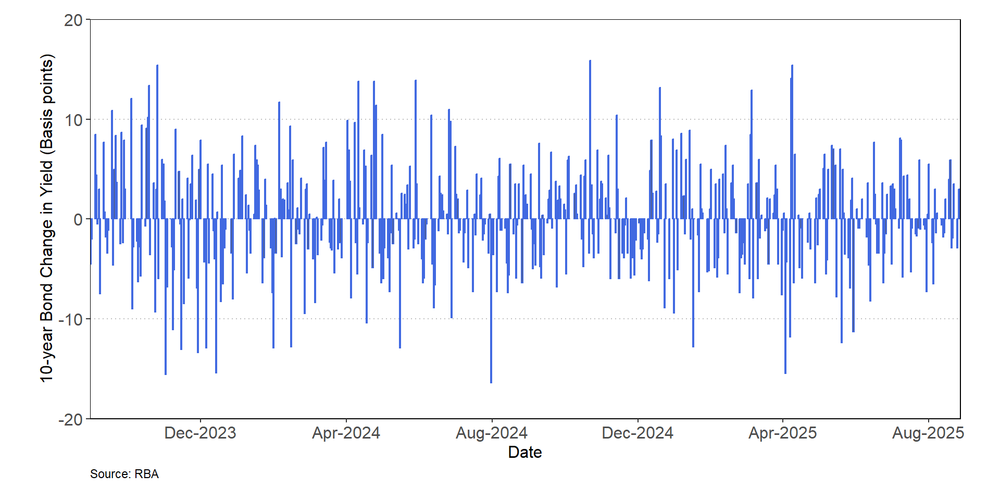
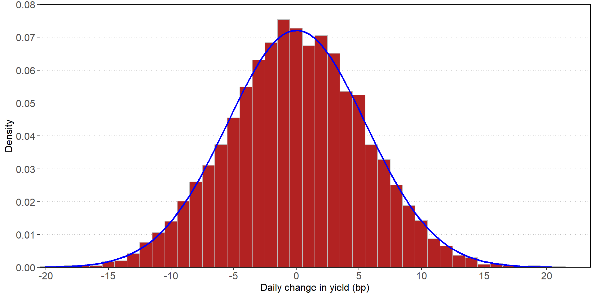

Market Risk
FIN 331 Lecture 7
Andrew Ainsworth
University of Wollongong
Lecture outline
- What is market risk?
- How can market risk be measured
- Value at risk (VaR)
- Historical simulations
- Monte Carlo simulations
- Expected shortfall
- APRA regulatory considerations for market risk
- Standard method
- Internal model approach
- Stress-testing
- Back-testing
Reading: Ch 15
Definition of market risk
- Market risk relates to the volatility in bank earnings that arises from its trading activities
- Market risk is driven by changes in financial market conditions that impact asset prices, interest rates, market volatility and market liquidity
- Market risk is linked to
- Interest rate risk
- Credit risk
- Sovereign risk
- Liquidity risk
- Market risk is related to the active trading of financial assets, liabilities and derivatives
Trading book vs. banking book
- A bank’s assets and liabilities can be classified as being either in the trading book or the banking book
- The trading portfolio is made up of assets and liabilities that are traded in liquid financial markets
- The trading book produces non-interest income and expenses
- The banking portfolio comprises assets and liabilities that are relatively illiquid and held for longer holding periods
- The banking book produces interest revenues, interest expense and fees
- Banking book
- Cash
- Loans
- Premises
- Other illiquid assets
- Deposits
- Other illiquid borrowed funds
- Capital
- Trading book
- Bonds
- Commodities
- Foreign exchange
- Equities
- Mortgage-backed securities
- Derivatives (off-balance sheet)
Why measure market risk?
- Management information
- Senior management can better understand the risk exposure taken by traders (relative to bank capital)
- Setting limits
- Trading limits can be set if market risk exposure can be measured allowing better risk management
- Resource allocation
- Adjusting returns for the level of risk taken to generate those returns will improve resource allocation and profitability
- Performance evaluation
- Risk-adjusting returns will allow for trades to be compensated for the risk taken to generate returns from their trading activities
- Regulation
- Regulators permit certain banks to use their own market risk models to calculate their capital requirements
Value-at-risk
- Value-at-Risk (VaR) definition
- “How much can I lose with \(x\%\) probability over a given time horizon”
- “I am \(x\%\) sure that the bank will not lose more than \(VaR\) in the next \(T\) days”
- RiskMetrics (or variance-covariance approach) assumes a normal distribution
Value-at-risk
- We can define the Daily Earnings at Risk (DEaR) as
\[\text{DEaR} = \text{\$MV of position} \times \text{Price volatility}\]
- The price volatility is based on a particular point of the normal distribution (e.g. 99%)
- The distribution is estimated using historical mean and standard deviation of the asset’s price
- The 99th percentile corresponds to \(2.33 \sigma\)
- The 95th percentile corresponds to \(1.96 \sigma\)
- Market risk of fixed income securities is driven by yield changes
- Bond price volatility can be captured by modified duration \((MD=\frac{Duration}{1+R})\)
- We can calculate the 99th percentile of historical yield changes
\[\text{DEaR} = \text{\$MV of position} \times \text{Modified duration} \times \Delta R_{99\%}\]
Value-at-risk
- We can calculate the earnings at risk over multiple days
\[\text{N-day} \ VaR = DEaR \times \sqrt{N}\]
- Portfolio aggregation
- It is important to consider correlation between assets in the trading book
- We can use portfolio theory to take this into account
\[\sigma_p^2 = \sum_{i=1}^{n} \sum_{j=1}^{n} w_i w_j \rho_{ij} \sigma_i \sigma_j\]
- We omit the weights as we are summing the separate DEaR
\[DEaR_p = \sqrt{DEaR_1^2 + DEaR_2^2 + 2 \times\rho_{12} \times DEaR_1 \times DEaR_2}\]
Criticisms of RiskMetrics approach
- Assumption of normal distribution for all asset returns is not accurate
- Asset distributions have “fat tails” which underestimates the risk of extreme losses
- RiskMetrics VaR assumes that daily volatility is constant
- RiskMetrics VaR assumes there is no autocorrelation: shocks are independent
- These criticisms all point to an underestimation of market risk
- It is important to note that there are mathematical alternatives that can resolve a lot of these issues
Historic approach to VaR
- An alternative approach uses historical data to measure risk
- This approach has a number of advantages
- Simplicity
- Asset returns do not need to be normally distributed
- Correlation and standard deviations do not need to be calculated
- This approach revalues the current trading portfolio using prices that existed on each day over the past 500 days (or some other length of time)
- There are ~ 250 trading days in a calendar year
- The VaR is the 1% worst case value out of these 500 values (i.e. 5th lowest value)
- Note that the worst-case scenario can be directly observed
- This approach can use different historical windows (e.g. 1000 days)
- But, the window needs to be representative of the future
Historic approach to VaR
- Let’s consider the daily change in yield on the 10-year Australian Government bond for the last 500 days
- The 99th percentile daily yield change is 13.8 bp

Monte Carlo simulation
- We can use Monte Carlo simulation to generate additional observations that maintain the same variance (covariance) structure
- We can use recent mean, standard deviations and correlations to create a normal distribution from which we can randomly draw 10,000 observations
- We obtain a large number of realistic values to calculate VaR
- This can be extended to multiple assets by using the covariance matrix
- Based on the asset values we can estimate the VaR as the 100th worst simulated loss out of 10,000
- Let’s use the daily change in yield on the 10-year Australian Government bond for the last 500 days to generate 10,000 simulated daily yield changes
- Mean daily change in yield = 0.02 basis points
- Standard deviation of daily change in yield = 5.53 basis points
- We want to estimate \(\Delta R_{99\%}\) to calculate \(\text{DEaR}\)
\[\text{DEaR} = \text{\$MV of position} \times \text{Modified duration} \times \Delta R_{99\%}\]
Monte Carlo simulation

- The \(\Delta R_{99\%}\) is 12.69 bp
- The mean from the simulation was 0.01 bp and the standard deviation was 5.47 bp
Expected shortfall
- Expected shortfall calculates the average value of losses that occur beyond the 99th percentile of the distribution
- Also known as conditional value at risk (CVaR)
- This is important when distributions are non-normal
- For discrete profit and loss values \((V)\), we can estimate expected shortfall (ES) as
\[\text{ES} = -E(\Delta V | \Delta V < - \text{VaR})\]
- The expected shortfall can be calculated for a specific confidence level \(c\) (e.g. 99%) of a continuous probability distribution:
\[\text{ES}(c) = \frac{1}{1-c} \int_c^1 \text{VaR}(u)\text{du}\]
- For continuous probability distributions expected shortfall uses a scaling factor based on a fat-tailed student’s t distribution using \(2.665 \sigma\) for the 99% confidence level
APRA regulation and market risk
- Prudential Standard APS 116 Capital Adequacy: Market Risk details market risk measurement for Australian ADIs
- ADIs need to hold capital to cover their exposure to market risk
- Market risk emanates from interest rate, foreign exchange, commodity, equity and derivatives exposures
- APRA decomposes market risk into two components
- General market risk: the risk of loss owing to changes in the general level of market prices or interest rates
- Specific risk: the risk that a security’s value will change due to issuer-specific factors
- Capital charges for market risk exposures can be calculated using the Standard Method or the Internal Model Approach
- The standard method prescribes the capital charges required for different market risk exposures
- The internal model approach is based on the use of value-at-risk (VaR) and requires approval from APRA
- Banks can use a combination of the internal model approach and the standard method
The standard method
- Some examples of the prescribed capital charges under the standard method
- No capital charge for Government bonds rated AA- or above
- 1.6% capital charge for Government bonds rated BBB- to A+ and with >24 months to maturity
- Equity positions are charged at 8%
- Net short or net long positions in foreign exchange are charge at 8%
- General market risk related to interest rates
- ADIs can use the maturity method or apply to APRA to use the duration method
- The capital charge increases with time to maturity based upon different maturity buckets up to a maximum of 12.5%
Internal model approach
- An ADI using an internal model has a daily capital requirement set as
- The higher of:
- An average of the daily VaR on each of the preceding sixty trading days, multiplied by a scaling factor
- Its previous day’s VaR
- The higher of:
- An average of the stressed VaR calculated over the preceding sixty trading days, multiplied by a scaling factor
- Its latest available stressed VaR
- The scaling factor is the sum of the VaR multiplication factor and a plus factor
- APRA sets the minimum multiplication factor at three but increases this if it is not satisfied with the ADIs model
- More on the plus factor later
Internal model approach
- ADIs need to identify and model the risk factors that impact its market risk exposures (both on-balance sheet and off-balance sheet)
- For example, credit spreads, term spreads, etc
- The VaR model must capture non-linearities as well as correlation risk and basis risk
- A 99% VaR using a 10-day holding period must be calculated daily
- Shorter holding period VaR that are scaled up to ten days require APRA approval
- The sample period for calculating VaR must have a minimum length of one year
- An ADI may only recognise empirical correlations within and across broad risk categories if approved in writing by APRA
Stress testing the VaR
- ADIs must calculate a stressed VaR
- This is a 10-day, 99th percentile VaR of the current portfolio, with VaR model inputs calibrated to historical data from a continuous 12-month period of significant financial stress relevant to the ADI’s portfolio
- The stress test must be incorporate both market risk and liquidity aspects of market disturbances
- The stress test must also address
- Illiquidity/gapping of prices
- Concentrated positions (in relation to market turnover)
- One-way markets
- Non-linear products/deep out-of-the money positions
- Events and jumps-to-defaults
- Other risks such as recovery rate uncertainty, implied correlations, or skew risk
Back-testing the VaR
- ADIs must back-testing the model comparing the 1-day VaR with the realised daily profit/loss
- This must use the past 12 months of VaR and profit/loss
- Exceptions are defined as losses exceeding the VaR
- The back-testing determines the plus factor that feeds into the capital charge
- The plus factor is 0% if there are <4 exceptions
- The plus factor is 40% if there are 5 exceptions
- The plus factor is 50% if there are 6 exceptions
- The plus factor is 65% if there are 7 exceptions
- The plus factor is 75% if there are 8 exceptions
- The plus factor is 85% if there are 9 exceptions
- The plus factor is 100% if there are >9 exceptions
- ADIs must back-test using actual trading outcomes and hypothetical trading outcomes based on the previous end of day portfolio holdings
Conclusion
- History has shown that it is vital for banks to monitor and manage market risk
- Value-at-risk is the primary measured used by banks
- There are many variants and approaches to calculate VaR
- Expected shortfall considers how extreme the losses could be
- APRA provides ADIs with two approaches to measure market risk and claculate capital charges
- Standard model for less complex ADIs
- Internal model approach for larger and more complex ADIs based on VaR
- Stress testing and back-testing are important aspects of market risk management